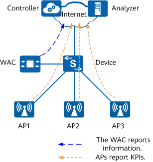

Networking Requirements
As shown in
Figure 1, in the WAC + Fit AP networking, APs report KPI information to a controller (iMaster NCE-Campus) and an analyzer (iMaster NCE-CampusInsight) based on the WMI reporting mechanism. The WAC reports information in Telemetry mode.
Figure 1 APs directly reporting KPIs
Item
|
Data
|
|---|
AP group
|
ap-group1
|
AP system profile
|
default
|
KPI reporting configuration for APs
|
- To the controller:
- WMI profile name: cloudmng
- Destination IP address: 10.1.2.3
- Port number: 10032
- To the analyzer:
- WMI profile name: campusinsight
- Destination IP address: 10.2.3.4
- Port number: 30003
|
Configuration Notes
- Configure the WAC to report information in Telemetry mode. For details, see "Telemetry Configuration" in CLI Configuration Guide > System Monitoring Configuration.
- If data needs to be reported to only one WMI server, do not configure reporting channels repeatedly. Otherwise, resources on the target server may be wasted.
- To enable the WAC and APs to communicate with the WMI server, you need to configure network connectivity in advance.
Configuration Roadmap
- Configure basic WLAN services so that APs can go online.
- Configure the WAC to report information in Telemetry mode.
- Configure interconnection parameters for APs to report data to a WMI server using a WMI profile, and bind the WMI profile to an AP group through an AP system profile.
Procedure
- Configure basic WLAN services and enable the APs in the AP group ap-group1 to go online.
- Configure the WAC to report information in Telemetry mode. For details, see "Telemetry Configuration" in CLI Configuration Guide > System Monitoring Configuration.
If KPI information reported by APs needs to be displayed on an analyzer, ensure that APs are configured on the WAC to report NE data through Telemetry. For details, run the sensor-path huawei-wlan-ap:wlan-ap/ap-instances command in the sensor group view.
- Configure interconnection parameters for APs to communicate with the WMI server.
- Configure interconnection parameters for APs to communicate with iMaster NCE-Campus.
<HUAWEI> system-view
[HUAWEI] sysname WAC
[WAC] wlan
[WAC-wlan] wmi-server name cloudmng
[WAC-wlan-wmi-server-prof-cloudmng] server ip-address 10.1.2.3 port 10032
[WAC-wlan-wmi-server-prof-cloudmng] quit
- Configure interconnection parameters for APs to communicate with CampusInsight.
[WAC-wlan] wmi-server name campusinsight
[WAC-wlan-wmi-server-prof-campusinsight] server ip-address 10.2.3.4 port 30003
[WAC-wlan-wmi-server-prof-campusinsight] quit
- Bind the WMI profiles to the AP group ap-group1 through an AP system profile.
[WAC-wlan] ap-system-profile name default
[WAC-wlan-ap-system-prof-default] wmi-server cloudmng index 1
[WAC-wlan-ap-system-prof-default] wmi-server campusinsight index 2
[WAC-wlan-ap-system-prof-default] quit
[WAC-wlan] ap-group name ap-group1
[WAC-wlan-ap-group-ap-group1] ap-system-profile default
[WAC-wlan-ap-group-ap-group1] return
Verifying the Configuration
# Check reference information about the WMI profile cloudmng on the device.
<WAC> display references wmi-server name cloudmng
Total: 1
--------------------------------------------------------------------------
Reference type Reference name Reference Index
--------------------------------------------------------------------------
AP system profile default 1
--------------------------------------------------------------------------
# Check reference information about the WMI profile campusinsight on the device.
<WAC> display references wmi-server name campusinsight
Total: 1
--------------------------------------------------------------------------
Reference type Reference name Reference Index
--------------------------------------------------------------------------
AP system profile default 2
--------------------------------------------------------------------------
Configuring Scripts
WAC
#
sysname WAC
#
wlan
wmi-server name cloudmng
server ip-address 10.1.2.3 port 10032
wmi-server name campusinsight
server ip-address 10.2.3.4 port 30003
ap-system-profile name default
wmi-server cloudmng index 1
wmi-server campusinsight index 2
ap-group name group1
#